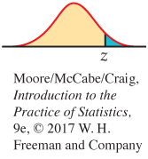
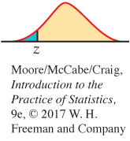
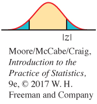

8.1 8.1 Inference for a Single Proportion
484
When you complete this section, you will be able to:
• Identify the sample proportion, the sample size, and the count for a single sample. Use this information to estimate the population proportion.
• Describe the relationship between the population proportion and the sample proportion.
• Identify the standard error for a sample proportion and the margin of error for confidence level C.
• Apply the guidelines for when to use the large-sample confidence interval for a population proportion.
• Find and interpret the large-sample confidence interval for a single proportion.
• Apply the guidelines for when to use the large-sample significance test for a population proportion.
• Use the large-sample significance test to test a null hypothesis about a population proportion.
• Find the sample size needed for a desired margin of error.
• Find the sample size needed for a significance test.
We want to estimate the proportion p of some characteristic in a large population. For example, we may want to know the proportion of likely voters who approve of the president’s conduct in office. We select a simple random sample (SRS) of size n from the population and record the count X of “successes” (such as Yes answers to a question about the president). A “success” response represents the characteristic of interest in this example.
simple random sample, p. 191
sampling distribution of a count, p. 314
In statistical terms, we are concerned with inference about the probability p of a success in the binomial setting. The sample proportion of successes estimates the unknown population proportion p. If the population is much larger than the sample (at least 20 times as large), the count X has approximately the binomial distribution B(n, p).1
EXAMPLE 8.1
Robotics and jobs. A Pew survey asked a panel of experts whether or not they thought that networked, automated, artificial intelligence (AI), and robotic devices will have displaced more jobs than they have created (net jobs) by 2025.2
ROBOT
The sample size is the number of experts who responded to the Pew survey question, n = 1896. The report on the survey tells us that 48% of the respondents said they “believe net jobs will decrease by 2025 due to networked, automated, artificial intelligence (AI), and robotic devices.” Thus, the sample proportion is We can calculate the count X from the information given; it is the sample size times the proportion responding Yes,
485
USE YOUR KNOWLEDGE
Question 8.1
8.1 Smartphones and purchases. A Google research study asked 5013 smartphone users about how they used their phones. In response to a question about purchases, 2657 reported that they purchased an item after using their smartphone to search for information about the item.3
(a) What is the sample size n for this survey?
(b) In this setting, describe the population proportion p in a short sentence.
(c) What is the value of the count X? Describe the count in a short sentence.
(d) Find the sample proportion .
Question 8.2
8.2 Coca-Cola and demographics. A Pew survey interviewed 162 CEOs from U.S. companies. The report of the survey quotes Muhtar Kent, Coca-Cola Company chairman and CEO, on the importance of demographics in developing customer strategies. Kent notes that the population of the United States is aging and that there is a need to provide products that appeal to this segment of the market. The survey found that 52% of the CEOs in the sample are planning to change their customer growth and retention strategies.
(a) How many CEOs participated in the survey? What is the sample size n for the survey?
(b) What is the count X of those who said that they are planning to change their customer growth and retention strategies?
(c) Find the sample proportion .
(d) The quotes from Muhtar Kent in the report could be viewed as anecdotal data. Do you think that these quotes are useful to explain and interpret the results of the survey? Write a short paragraph discussing your answer.
anecdotal data, p. 164
If the sample size n is very small, we must base tests and confidence intervals for p on the binomial distributions. These are awkward to work with because of the discreteness of the binomial distributions.4 But we know that when the these counts are large, both the count X and the sample proportion are approximately Normal. We will consider only inference procedures based on the Normal approximation. These procedures are similar to those for inference about the mean of a Normal distribution.
Normal approximations for counts and proportions, p. 322
Large-sample confidence interval for a single proportion
The unknown population proportion p is estimated by the sample proportion . If the sample size n is sufficiently large, the sampling distribution of is approximately Normal, with mean and standard deviation . This means that approximately 95% of the time will be within of the unknown population proportion p.
486
standard error, p. 408
Note that the standard deviation depends upon the unknown parameter p. To estimate this standard deviation using the data, we replace p in the formula by the sample proportion . As we did in Chapter 7, we use the term standard error for the standard deviation of a statistic that is estimated from data. Here is a summary of the procedure.
LARGE-SAMPLE CONFIDENCE INTERVAL FOR A POPULATION PROPORTION
Choose an SRS of size n from a large population with an unknown proportion p of successes. The sample proportion is
where X is the number of successes. The standard error of is
and the margin of error for confidence level C is
where the critical value z* is the value for the standard Normal density curve with area C between −z* and z*.
An approximate level C confidence interval for p is
Use this interval for 90% (z* = 1.645), 95% (z* = 1.96), or 99% (z* = 2.576) confidence when the number of successes and the number of failures are both at least 10.
Table D includes a line at the bottom with values of z* for selected values of C. Use Table A for other values of C.
EXAMPLE 8.2
Inference for robotics and jobs. The sample survey in Example 8.1 found that 910 of a sample of 1896 experts reported that they think net jobs will decrease by 2025 because of robots and related technology developments. Thus, the sample size is n = 1896 and the count is X = 910. The sample proportion is
The standard error is
The z critical value for 95% confidence is z* = 1.96, so the margin of error is
487
The confidence interval is
We are 95% confident that between 45.8% and 50.2% of CEOs would report that they think net jobs will decrease by 2025 because of robots and related technology developments.

In performing these calculations, we have kept a large number of digits for our intermediate calculations. However, when reporting the results, we prefer to use rounded values. For example, “48.0% with a margin of error of 2.2%.” You should always focus on what is important. Reporting extra digits that are not needed can divert attention from the main point of your summary. There is no additional information to be gained by reporting with a margin of error of 0.022489. Do you think it would be better to report 48% with a 2% margin of error?

Remember that the margin of error in any confidence interval includes only random sampling error. If people do not respond honestly to the questions asked, for example, your estimate is likely to miss by more than the margin of error. Likewise, if the response rate is low, your estimate and standard error may be biased.
Although the calculations for statistical inference for a single proportion are relatively straightforward and can be done with a calculator or in a spreadsheet, we prefer to use software.
EXAMPLE 8.3
Robotics and jobs confidence interval using software. Figure 8.1 shows a spreadsheet for the robotics and jobs example that could be used as input for statistical software. Note that there are 1896 experts who expressed an opinion in this example. The sheet specifies a value for each of these 1896 cases: there are 910 cases with the value Yes and 986 cases with the value No. An alternative spreadsheet would not summarize the responses but rather would list all 1896 cases with the response for each case.
Figure 8.2 gives output from JMP and Minitab for these data. There are differences in the displays, but it is easy to find the 95% confidence interval. For JMP, the confidence interval is on the line with “Level” equal to Yes under the headings “Lower CI” and “Upper CI.” Minitab gives the output in the form of an interval under the heading “95% CI.” Notice that the confidence intervals are similar but not identical. Minitab notes that the Normal approximation is used. This is the large-sample method that we described. JMP notes that an alternative method, using score functions, is used.
488

As usual, the output reports more digits than are useful. When you use software, be sure to think about how many digits are meaningful for your purposes. Do not clutter your report with information that is not meaningful.
We recommend the large-sample confidence interval for 90%, 95%, and 99% confidence whenever the number of successes and the number of failures are both at least 10. For smaller sample sizes, we recommend exact methods that use the binomial distribution. These, as well as other alternative procedures, such as the score function, are available as the default or as options in many statistical software packages. We do not cover them here. There is also an intermediate case between large samples and very small samples where a slight modification of the large-sample approach works quite well. This method is called the “plus four” procedure and is described next.
489
USE YOUR KNOWLEDGE
Question 8.3
8.3 Robotics and jobs. Refer to Example 8.1 (page 484).
(a) Find , the standard error of .
(b) Give the 95% confidence interval for p in the form of estimate plus or minus the margin of error.
(c) Give the confidence interval as an interval of percents.
(d) State your conclusion and interpret the meaning of the confidence interval in part (c).
Question 8.4
8.4 Coca-Cola and demographics. Refer to Exercise 8.2 (page 485).
(a) Find , the standard error of .
(b) Give the 95% confidence interval for p in the form of estimate plus or minus the margin of error.
(c) Give the confidence interval as an interval of percents.
(d) State your conclusion and interpret the meaning of the confidence interval in part (c).
BEYOND THE BASICS
The Plus Four Confidence Interval for a Single Proportion
Computer studies reveal that confidence intervals based on the large-sample approach can be quite inaccurate when the number of successes and the number of failures are not at least 10. When this occurs, a simple adjustment to the confidence interval works very well in practice. The adjustment is based on assuming that the sample contains four additional observations, two of which are successes and two of which are failures. The estimator of the population proportion based on this plus four rule is
This estimate was first suggested by Edwin Bidwell Wilson in 1927, and it is sometimes called the Agresti-Coull interval.5 We call it the plus four estimateplus four estimate. The confidence interval is based on the z statistic obtained by standardizing the plus four estimate Because is the sample proportion for our modified sample of size n + 4, it isn’t surprising that the distribution of is close to the Normal distribution with mean p and standard deviation . To get a confidence interval, we estimate p by in this standard deviation to get the standard error of Here is an example.
490
EXAMPLE 8.4
Percent of equol producers. Research has shown that there are many health benefits associated with a diet that contains soy foods. Substances in soy called isoflavones are known to be responsible for these benefits. When soy foods are consumed, some subjects produce a chemical called equol, and it is thought that production of equol is a key factor in the health benefits of a soy diet. Unfortunately, not all people are equol producers; there appear to be two distinct subpopulations: equol producers and equol nonproducers.
A nutrition researcher planning some bone health experiments would like to include some equol producers and some nonproducers among her subjects. A preliminary sample of 12 female subjects were measured, and four were found to be equol producers. We would like to estimate the proportion of equol producers in the population from which this researcher will draw her subjects.
The plus four estimate of the proportion of equol producers is
For a 95% confidence interval, we use Table D to find z* = 1.96. We first compute the standard error
= 0.12103
and then the margin of error
= (1.96)(0.12103)
= 0.237
So the confidence interval is
= (0.138, 0.612)
We estimate with 95% confidence that between 14% and 61% of women from this population are equol producers. Note that the interval is very wide because the sample size is very small. Compare this result with the large-sample confidence interval.
If the true proportion of equol users is near 14%, the lower limit of this interval, there may not be a sufficient number of equol producers in the study if subjects are tested only after they are enrolled in the experiment. It may be necessary to determine whether or not a potential subject is an equol producer. The study could then be designed to have the same number of equol producers and nonproducers.
491
Significance test for a single proportion
Recall that the sample proportion is approximately Normal, with mean and standard deviation . For confidence intervals, we substitute for p in the last expression to obtain the standard error. When performing a significance test, however, the null hypothesis specifies a value for p, and we assume that this is the true value when calculating the P-value. Therefore, when we test H0: p = p0, we substitute p0 into the expression for and then standardize . Here are the details.
Normal approximation for proportions, p. 322
LARGE-SAMPLE SIGNIFICANCE TEST FOR A POPULATION PROPORTION
Draw an SRS of size n from a large population with an unknown proportion p of successes. To test the hypothesis H0: p = p0, compute the z statistic
In terms of a standard Normal random variable Z, the approximate P-value for a test of H0 against
Ha: p > p0 is P(Z ≥ z) 
Ha: p < p0 is P(Z ≤ z) 
Ha: p ≠ p0 is 2P(Z ≥ |z|) 
We recommend the large-sample z significance test as long as the expected number of successes, np0, and the expected number of failures, n(1 − p0), are both at least 10.
sign test for matched pairs, p. 473
If the numbers of successes and failures are not both at least 10, or if the population is less than 20 times as large as the sample, other procedures should be used. One such approach is to use the binomial distribution as we did with the sign test. Here is a large-sample example.
EXAMPLE 8.5
Comparing two sunblock lotions. Your company produces a sunblock lotion designed to protect the skin from both UVA and UVB exposure to the sun. You hire a company to compare your product with the product sold by your major competitor. The testing company exposes skin on the backs of a sample of 20 people to UVA and UVB rays and measures the protection provided by each product. For 13 of the subjects, your product provided better protection, while for the other 7 subjects, your competitor’s product provided better protection. Do you have evidence to support a commercial claiming that your product provides superior UVA and UVB protection? For the data we have n = 20 subjects and X = 13 successes. The parameter p is the proportion of people who would receive superior UVA and UVB protection from your product. To answer the claim question, we test
H0: p = 0.5
Ha: p ≠ 0.5
SUNBL
492
The expected numbers of successes (your product provides better protection) and failures (your competitor’s product provides better protection) are 20 × 0.5 = 10 and 20 × 0.5 = 10. Both are at least 10, so we can use the z test. The sample proportion is
The test statistic is
From Table A, we find P(Z < 1.34) = 0.9099, so the probability in the upper tail is 1 − 0.9099 = 0.0901. The P-value is the area in both tails, P = 2 × 0.0901 = 0.1802.
We conclude that the sunblock testing data are compatible with the hypothesis of no difference between your product and your competitor’s product (, z = 1.34, P = 0.18). The data do not support your proposed advertising claim.
Note that we have used the two-sided alternative for this example. In settings like this, we must start with the view that either product could be better if we want to prove a claim of superiority. Thinking or hoping that your product is superior cannot be used to justify a one-sided test.
Although these calculations are not particularly difficult to do using a calculator, we prefer to use software. Here are some details.
EXAMPLE 8.6
Sunblock significance tests using software. JMP and Minitab outputs for the analysis in Example 8.5 appear in Figure 8.3. First, JMP uses a slightly different way of reporting the results. Two ways of performing the significance test are labeled in the column “Test.” The one that corresponds to the procedure that we have described is on the second line, labeled “Pearson.” The P-value under the heading “Prob>Chisq” is 0.1797, which is very close to the 0.1802 that we calculated using Table A. Minitab reports the value of the test statistic z, and the P-value is rounded to 0.180.
SUNBL
493
USE YOUR KNOWLEDGE
Question 8.5
8.5 Draw a picture. Draw a picture of a standard Normal curve and shade the tail areas to illustrate the calculation of the P-value for Example 8.5.
Question 8.6
8.6 What does the confidence interval tell us? Inspect the outputs in Figure 8.3. Report the confidence interval for the percent of people who would get better sun protection from your product than from your competitor’s. Be sure to convert from proportions to percents and to round appropriately. Interpret the confidence interval and compare this way of analyzing data with the significance test.
494
Question 8.7
8.7 The effect of X. In Example 8.5 (page 491), suppose that your product provided better UVA and UVB protection for 15 of the 20 subjects. Perform the significance test and summarize the results.
Question 8.8
8.8 The effect of n. In Example 8.5 (page 491), consider what would have happened if you had paid for twice as many subjects to be tested. Assume that the results would be similar to those in Example 8.5, that is, 65% of the subjects had better UVA and UVB protection with your product. Perform the significance test and summarize the results.
In Example 8.5, we treated an outcome as a success whenever your product provided better sun protection. Would we get the same results if we defined success as an outcome where your competitor’s product was superior? In this setting, the null hypothesis is still H0: p = 0.5. You will find that the z test statistic is unchanged except for its sign and that the P-value remains the same.
USE YOUR KNOWLEDGE
Question 8.9
8.9 Redefining success. In Example 8.5 (page 491), we performed a significance test to compare your product with your competitor’s. Success was defined as the outcome where your product provided better protection. Now, take the viewpoint of your competitor where success is defined to be the outcome where your competitor’s product provides better protection. In other words, n remains the same, but X is now 7.
(a) Perform the two-sided significance test and report the results. How do these compare with what we found in Example 8.5?
(b) Find the 95% confidence interval for this setting, and compare it with the interval calculated when success is defined as the outcome where your product provides better protection.

We do not often use significance tests for a single proportion because it is uncommon to have a situation where there is a precise p0 that we want to test. For physical experiments such as coin tossing or drawing cards from a well-shuffled deck, probability arguments lead to an ideal p0. Even here, however, it can be argued, for example, that no real coin has a probability of heads exactly equal to 0.5. Data from past large samples can sometimes provide a p0 for the null hypothesis of a significance test. In some types of epidemiology research, for example, “historical controls” from past studies serve as the benchmark for evaluating new treatments. Medical researchers argue about the validity of these approaches, because the past never quite resembles the present. In general, we prefer comparative studies whenever possible. The matched pairs study of Example 8.5 is an example of a comparative study that involved a single proportion.
Choosing a sample size for a confidence interval
In Chapter 6, we showed how to choose the sample size n to obtain a confidence interval with specified margin of error m for a Normal mean. We also discussed the effect of the sample size on the power of a significance test for a Normal mean. Because we are using a Normal approximation for inference about a population proportion, sample size selection proceeds in much the same way.
choosing sample size, p. 351
495
Recall that the margin of error for the large-sample confidence interval for a population proportion is
Choosing a confidence level C fixes the critical value z*. The margin of error also depends on the value of and the sample size n. Because we don’t know the value of until we gather the data, we must guess a value to use in the calculations. We will call the guessed value p*. There are two common ways to get p*:
1. Use the sample estimate from a pilot study or from similar studies done earlier.
2. Use p* = 0.5. Because the margin of error is largest when , this choice gives a sample size that is somewhat larger than we really need for the confidence level we choose. It is a safe choice no matter what the data later show.
Once we have chosen p* and the margin of error m that we want, we can find the n we need to achieve this margin of error. Here is the result.
SAMPLE SIZE FOR DESIRED MARGIN OF ERROR
The level C confidence interval for a proportion p will have a margin of error approximately equal to a specified value m when the sample size satisfies
Here, z* is the critical value for confidence level C, and p* is a guessed value for the proportion of successes in the future sample.
The margin of error will be less than or equal to m if p* is chosen to be 0.5. Substituting p* = 0.5 into the formula above gives
The value of n obtained by this method is not particularly sensitive to the choice of p* when p* is fairly close to 0.5. However, if the value of p is likely to be smaller than about 0.3 or larger than about 0.7, use of p* = 0.5 may result in a sample size that is much larger than needed.
EXAMPLE 8.7
Planning a survey of students. A large university is interested in assessing student satisfaction with the overall campus environment. The plan is to distribute a questionnaire to an SRS of students, but before proceeding, the university wants to determine how many students to sample. The questionnaire asks about a student’s degree of satisfaction with various student services, each measured on a five-point scale. The university is interested in the proportion p of students who are satisfied (that is, who choose either “satisfied” or “very satisfied,” the two highest levels on the five-point scale).
496
The university wants to estimate p with 95% confidence and a margin of error less than or equal to 3%, or 0.03. For planning purposes, it is willing to use p* = 0.5. To find the sample size required,
Round up to get n = 1068. (Always round up. Rounding down would give a margin of error slightly greater than 0.03.)
Similarly, for a 2.5% margin of error, we have (after rounding up)
and for a 2% margin of error,
News reports frequently describe the results of surveys with sample sizes between 1000 and 1500 and a margin of error of about 3%. These surveys generally use sampling procedures more complicated than simple random sampling, so the calculation of confidence intervals is more involved than what we have studied in this section. The calculations in Example 8.7 show in principle how such surveys are planned.
In practice, many factors influence the choice of a sample size. The following example illustrates one set of factors.
EXAMPLE 8.8
Assessing interest in Pilates classes. The Division of Recreational Sports (Rec Sports) at a major university is responsible for offering comprehensive recreational programs, services, and facilities to the students. Rec Sports is continually examining its programs to determine how well it is meeting the needs of the students. Rec Sports is considering adding some new programs and would like to know how much interest there is in a new exercise program based on the Pilates method.6 It will take a survey of undergraduate students. In the past, Rec Sports emailed short surveys to all undergraduate students. The response rate obtained in this way was about 5%. This time, it will send emails to a simple random sample of the students and will follow up with additional emails and eventually a phone call to get a higher response rate. Because of limited staff and the work involved with the follow-up, it would like to use a sample size of about 200 responses. It assumes that the new procedures will improve the response rate to 90%, so it will contact 225 students in the hope that these will provide at least 200 valid responses. One of the questions it will ask is, “Have you ever heard about the Pilates method of exercise?”
497
The primary purpose of the survey is to estimate various sample proportions for undergraduate students. Will the proposed sample size of n = 200 be adequate to provide Rec Sports with the needed information? To address this question, we calculate the margins of error of 95% confidence intervals for various values of .
EXAMPLE 8.9
Margins of error. In the Rec Sports survey, the margin of error of a 95% confidence interval for any value of and n = 200 is
The results for various values of are
| m | m | ||
|---|---|---|---|
| 0.05 | 0.030 | 0.60 | 0.068 |
| 0.10 | 0.042 | 0.70 | 0.064 |
| 0.20 | 0.056 | 0.80 | 0.056 |
| 0.30 | 0.064 | 0.90 | 0.042 |
| 0.40 | 0.068 | 0.95 | 0.030 |
| 0.50 | 0.070 |
Rec Sports judged these margins of error to be acceptable, and it contacted 225 students, hoping to achieve a sample size of 200 for its survey.
The table in Example 8.9 illustrates two points. First, the margins of error for and are the same. The margins of error will always be the same for and . This is a direct consequence of the form of the confidence interval. Second, the margin of error varies between only 0.064 and 0.070 as varies from 0.3 to 0.7, and the margin of error is greatest when , as we claimed earlier (page xxx). It is true in general that the margin of error will vary relatively little for values of between 0.3 and 0.7. Therefore, when planning a study, it is not necessary to have a very precise guess for p. If p* = 0.5 is used and the observed is between 0.3 and 0.7, the actual interval will be a little shorter than needed, but the difference will be small.

Again it is important to emphasize that these calculations consider only the effects of sampling variability that are quantified in the margin of error. Other sources of error, such as nonresponse and possible misinterpretation of questions, are not included in the table of margins of error for Example 8.9. Rec Sports is trying to minimize these kinds of errors. It performed a pilot study using a small group of current users of its facilities to check the wording of the questions, and for the final survey it devised a careful plan to follow up with the students who did not respond to the initial email.
498
USE YOUR KNOWLEDGE
Question 8.10
8.10 Confidence level and sample size. Refer to Example 8.7 (page 494). Suppose that the university was interested in a 95% confidence interval with margin of error 0.04. Would the required sample size be smaller or larger than 1068 students? Verify this by performing the calculation.
Question 8.11
8.11 Make a plot. Use the values for and m given in Example 8.9 to draw a plot of the sample proportion versus the margin of error. Summarize the major features of your plot.
Choosing a sample size for a significance test
In Chapter 6, we also introduced the idea of power for a significance test. These ideas apply to the significance test for a proportion that we studied in this section. There are some more complicated details, but the basic ideas are the same. Fortunately, software can take care of the details, and we can concentrate on the input and output.
power, p. 391
To find the required sample size, we need to specify
• The value of p0 in the null hypothesis H0: p = p0.
• The alternative hypothesis, two-sided (Ha: p ≠ p0), one-sided (Ha: p > p0 or Ha: p < p0).
• A value of p for the alternative hypothesis.
• The Type I error (α, the probability of rejecting the null hypothesis when it is true); usually we choose 5% (α = 0.05) for the Type I error.
• Power (probability of rejecting the null hypothesis when it is false); usually we choose 80% (0.80) for power.
EXAMPLE 8.10
Sample size for comparing two sunblock lotions. In Example 8.5 (page 491), we performed the significance test for comparing two sunblock lotions in a setting where each subject used the two lotions and the product that provided better protection was recorded. Although your product performed better 13 times in 20 trials, the value of was not sufficiently far from the null hypothesized value of p0 = 0.5 for us to reject the H0, (p = 0.18). Let’s suppose that the true percent of the time that your lotion would perform better is p0 = 0.65, and we plan to test the null hypothesis H0: p = 0.5 versus the two-sided alternative Ha: p ≠ 0.5 using a Type I error probability of 0.05.
What sample size n should we choose if we want to have an 80% chance of rejecting H0? Outputs from JMP and Minitab are given in Figure 8.4. JMP indicates that n = 89 should be used, while Minitab suggests n = 85. The difference is due to the different methods that can be used for these calculations.
499
Note that Minitab provides a graph as a function of the value of the proportion for the alternative hypothesis. Similar plots can be produced by JMP. In some situations, you might want to specify the sample size n and have software compute the power. This option is available in JMP, Minitab, and other software.
500
USE YOUR KNOWLEDGE
Question 8.12
8.12 Compute the sample size for a different alternative. Refer to Example 8.10 (page 498). Use software to find the sample size needed for a two-sided test of the null hypothesis that p = 0.5 versus the two-sided alternative with α = 0.05 and 80% power if the alternative is p = 0.7.
Question 8.13
8.13 Compute the power for a given sample size. Consider the setting in Example 8.10 (page 498). You have a budget that will allow you to test 100 subjects. Use software to find the power of the test for this value of n.